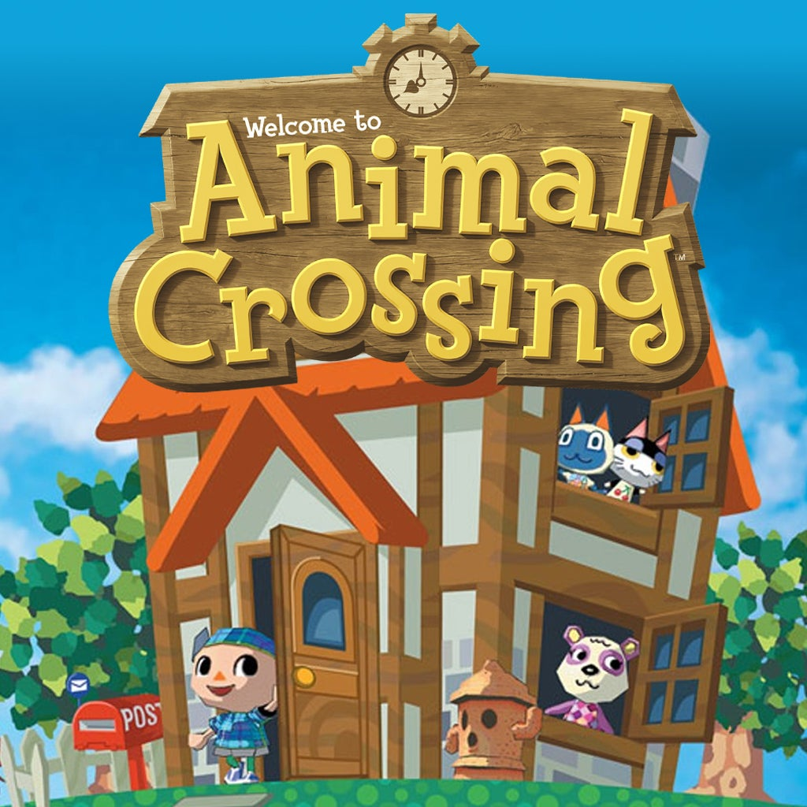
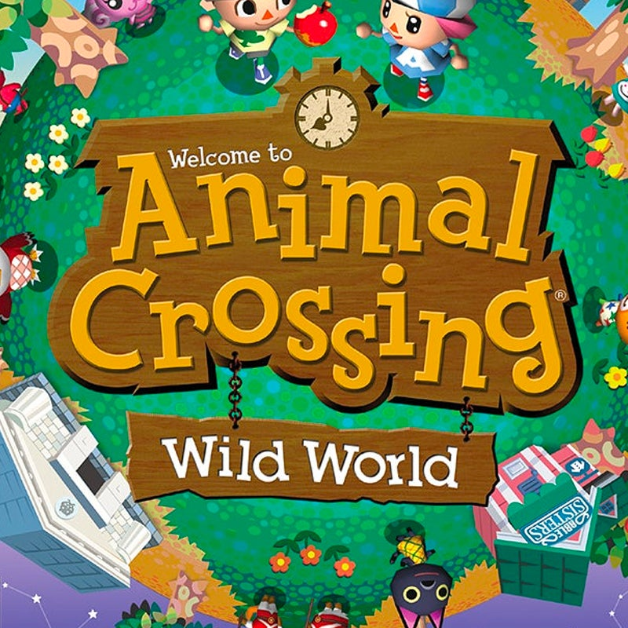
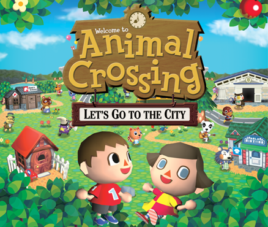
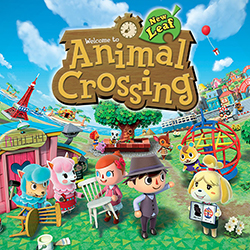
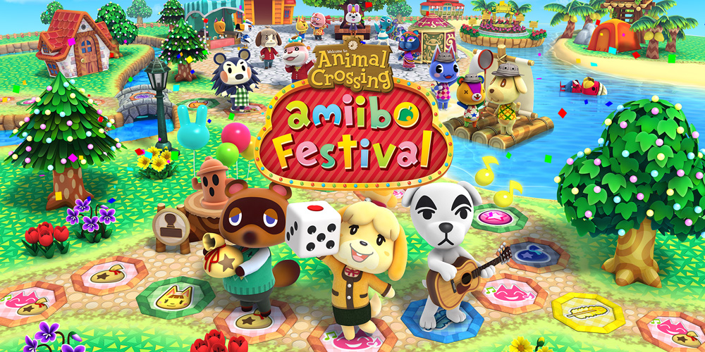
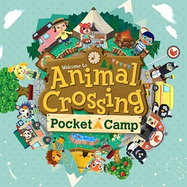

Launch dates of games in the Animal Crossing Series.
Animal Crossing was originally released in Japan for the Nintendo 64 on April 14, 2001.
It was enhanced and released on the GameCube the same year. This version was localised and released in North America on September 16, 2002, Australia on October 17, 2003, and Europe on September 24, 2004.
An extended version titled "Dōbutsu no Mori e+" was released on June 27, 2003, in Japan. The Nintendo 64 version of the game was released in China in 2006 for iQue Player.
Animal Crossing: Wild World was released for the Nintendo DS in Japan on November 23, 2005, North America on December 5, 2005, Australia on December 8, 2005, and Europe on March 31, 2006.
It was the first game in the series to use Nintendo Wi-Fi Connection.
The game was later re-released on the Wii U Virtual Console on October 13, 2016, although its Wi-Fi multiplayer feature is unavailable due to the discontinuation of Nintendo Wi-Fi Connection.
Animal Crossing: City Folk is also known as Animal Crossing: Let's Go to the City in Europe and Australia.
City Folk was released for the Wii in North America on November 16, 2008, Japan on November 20, 2008, Australia on December 4, 2008, and Europe on December 5, 2008.
It was later released in South Korea in 2010.
It was the first Wii game to utilise the Wii Speak, an accessory that allows players to talk to each other during online play.
Animal Crossing: New Leaf was announced at E3 2010.
It was released for the Nintendo 3DS in Japan on November 8, 2012, North America on June 9, 2013, Europe on June 14, 2013, and Australia on June 15, 2013.
For the first time in the series, players are appointed to the role of Mayor.
In November 2016, a new update was released entitled Welcome amiibo, adding several new locations, items and activities.
Animal Crossing: Happy Home Designer is a community simulation video game for the Nintendo 3DS and the first spin-off of the Animal Crossing series.
It was released in Japan on July 30, 2015, North America on September 25, 2015, Europe on October 2, 2015, and Australia on October 3, 2015.
The game revolves around designing houses for villagers based on their requests.
By scanning Amiibo cards, players can unlock the ability to design special characters' houses.
The game has a score of 66 out of 100 on Metacritic, which signifies "mixed or average reviews".